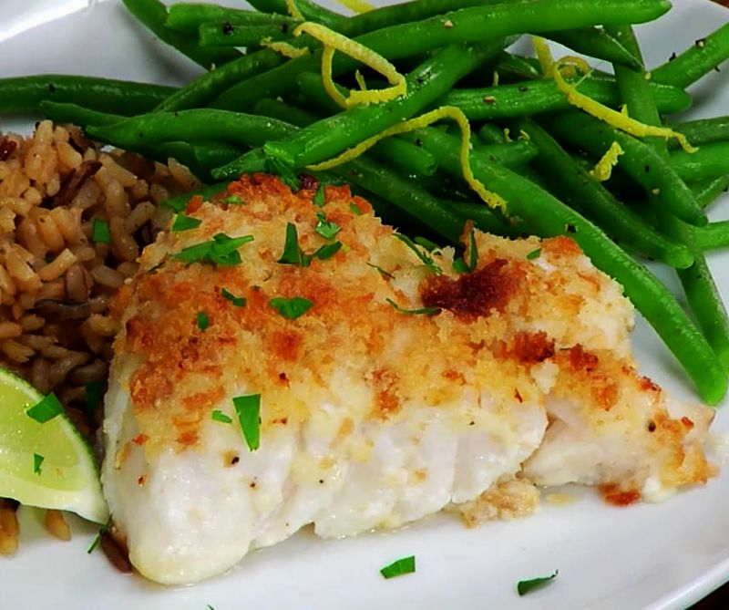

Easy Bake Fish
\
Description
- 3 tablespoons honey
- 3 tablespoons Dijon mustard
- 1 teaspoon lemon juice
- 4 (6 ounce) salmon steaks
- ½ teaspoon pepper
Steps
- Preheat oven to 325 degrees F (165 degrees C).
- In a small bowl, mix honey, mustard, and lemon juice. Spread the mixture over the
salmon steaks. Season with pepper. Arrange in a medium baking dish.
- Bake 20 minutes in the preheated oven, or until fish easily flakes with a fork.